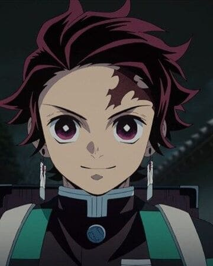
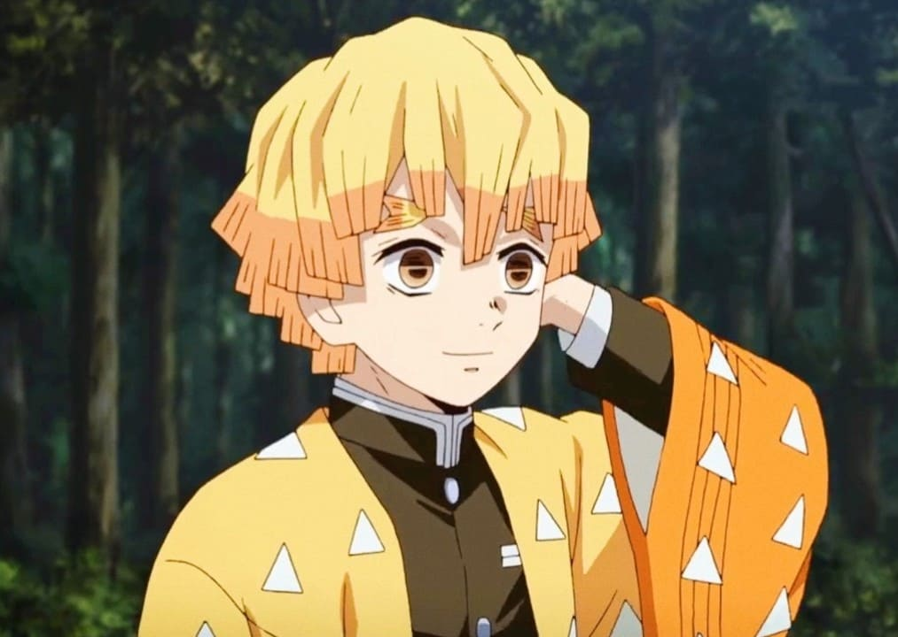
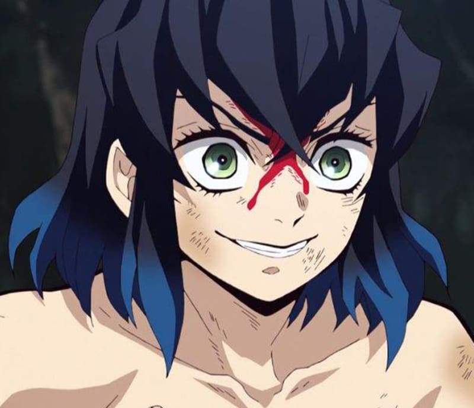
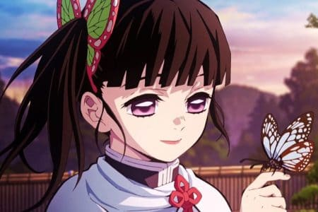
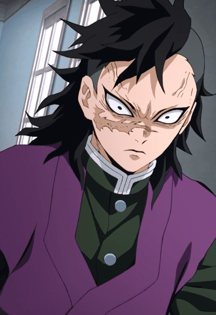

Cazadores de Demonios
-

Tanjiro Kamado
Tanjiro Kamado (竈門かまど 炭たん治じ郎ろう, Kamado Tanjirō) es un cazador de Demonios cuyo principal objetivo es encontrar al responsable de haber matado a su familia y convertido a su hermana Nezuko en un Demonio.
-

Zenitsu Agatsuma
Zenitsu Agatsuma (我あが妻つま善ぜん逸いつ, Agatsuma Zen'itsu) es un Cazador de Demonios y un compañero de viaje de Tanjiro Kamado.
-

Inosuke Hashibira
Inosuke Hashibira (嘴はし平びら伊い之の助すけ, Hashibira Inosuke) acompaña a Tanjirō, Nezuko y Zenitsu en el viaje de la hermana de Tanjirō en su recuperación de su parte humana. Es el creador y único usuario conocido de la respiración de la bestia.
-

Kanao Tsuyuri
Kanao Tsuyuri (栗つ花ゆ落りカナヲ, Tsuyuri Kanao) es una Cazadora de Demonios, la hermana adoptiva de Kanae Kocho y Shinobu Kocho y una Tsuguko.
-

Genya Shinazugawa
Genya Shinazugawa (不死しなず川がわ 玄げん弥や, Shinazugawa Gen'ya) fue un Cazador de Demonios perteneciente al Cuerpo de Exterminio de Demonios y hermano menor del Pilar del Viento, Sanemi Shinazugawa.